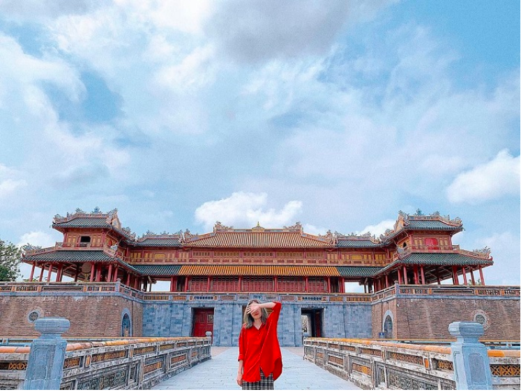

1. Điểm du lịch Phú Quốc
Không phải ngẫu nhiên mà hòn ngọc Phú Quốc được mệnh danh là thiên đường du lịch. Du lịch Phú Quốc nổi tiếng với những bãi biển đẹp, hoang sơ như Bãi Sao, Bãi Dài, Gành Dầu,... cùng nhiều điểm vui chơi hấp dẫn như VinWonders Phú Quốc, Vinpearl Safari, cùng các địa điểm du lịch Phú Quốc nổi tiếng như vườn tiêu, chợ đêm, Dinh Cậu, suối Tranh,... Đến đây, du khách còn được thưởng thức nhiều món ngon đậm đà hương vị biển như hải sâm, tiết canh cua, gỏi cá trích,...

Vẻ đẹp hoang sơ, yên bình của đảo ngọc Phú Quốc (Ảnh: Sưu tầm)
2. Địa điểm du lịch Nha Trang
Vẻ đẹp tựa như tranh của địa điểm du lịch Nha Trang để lại ấn tượng khó phai trong lòng du khách. Đến với thành phố biển xinh đẹp này, bạn sẽ được chiêm ngưỡng cảnh quan thiên nhiên tuyệt đẹp của vịnh Vân Phong, vịnh Ninh Vân, đảo Điệp Sơn,... Check in nhiều địa điểm thú vị của thành phố như Hòn Chồng, Tháp bà Ponagar, Viện Hải Dương học,... Đừng quên thưởng thức nhiều món đặc sản thơm ngon như cá nướng ớt xiêm xanh, bún sứa, bánh xèo mực,..

Bình minh tuyệt đẹp tại Hòn Chồng Nha Trang (Ảnh: Sưu tầm)
3. Hội An - Địa điểm du lịch hút khách bậc nhất Việt Nam
Hội An là một trong những điểm đến hàng đầu của miền Trung với nhiều thắng cảnh đẹp cùng nền ẩm thực độc đáo. Du lịch Hội An, du khách có dịp chiêm ngưỡng những di sản kiến trúc độc đáo có từ hàng trăm năm trước như các ngôi nhà cổ, bảo tàng, chùa chiền,...
Hội An còn là nơi hội tụ của nhiều điểm tham quan, vui chơi hấp dẫn như Cù Lao Chàm, biển Cửa Đại, thánh địa Mỹ Sơn, làng rau Trà Quế,... Ngoài cảnh đẹp, ẩm thực nơi đây cũng khiến nhiều du khách mê mẩn với những món ngon như cao lầu, mì Quảng, hoành thánh,...

Phố cổ Hội An nơi còn lưu giữ nhiều nét kiến trúc cổ xưa độc đáo (Ảnh: @yuu.yenn)
4. Địa điểm du lịch Đà Nẵng
Trong hành trình khám phá miền Trung Việt Nam, bạn không thể nào bỏ qua địa điểm du lịch Đà Nẵng. Đây là thành phố của nhiều cây cầu đẹp như cầu sông Hàn, cầu Rồng, cầu Thuận Phước, cầu tình yêu; những bãi biển hoang sơ, thơ mộng như biển Mỹ Khê, biển Non Nước, biển Xuân Thiều,... cùng nhiều thắng cảnh đẹp khác như núi Ngũ Hành Sơn, bán đảo Sơn Trà, Ghềnh Bàng,... Không chỉ có cảnh đẹp, nơi đây còn níu chân du khách bởi nhiều món ngon Đà Nẵng hấp dẫn như bún mắm nêm, bê thui, mì Quảng, cơm gà,...
Bãi biển Mỹ Khê Đà Nẵng là điểm du lịch gần đây đang nổi thu hút du khách tham quan
5. Điểm du lịch nổi tiếng Hạ Long Quảng Ninh
Địa điểm du lịch Hạ Long Quảng Ninh là một trong những điểm đến hấp dẫn bậc nhất nước ta. Với diện tích lên đến 1.553km2 bao gồm 1.900 hòn đảo đá vôi mang nhiều hình thù đẹp mắt, sinh động.
Du lịch Hạ Long - 1 trong 7 kỳ quan thiên nhiên thế giới, du khách sẽ được khám phá nhiều hang động độc đáo, các hòn đảo tuyệt đẹp như đảo Mắt Rồng, Ngọc Vừng, hòn Con Cóc,... Cùng với cảnh đẹp, nơi đây còn có nhiều món đặc sản thơm ngon như chả mực, sá sùng, hàu nướng, chả rươi, sam biển,...
Vịnh Hạ Long - 1 trong 7 kỳ quan thiên nhiên thế giới, là nơi ai cũng muốn được một lần đặt chân đến (Ảnh: Sưu tầm)
6. Địa điểm du lịch Sài Gòn
Sài Gòn là thành phố năng động, sầm uất bậc nhất nước ta. Đến với địa điểm du lịch Sài Gòn, du khách không chỉ được ngắm cảnh phố xá nhộn nhịp, đông vui mà còn được check in nhiều điểm vui chơi, tham quan nổi bật của thành phố như phố đi bộ Nguyễn Huệ, bến Nhà Rồng, Dinh Độc Lập,... Ngoài ra, du khách còn có cơ hội ghé thăm các địa điểm du lịch gần Sài Gòn nổi tiếng như địa đạo Củ Chi...
Landmark 81 đẹp rực rỡ giữa Sài Gòn hoa lệ
7. Điểm du lịch Quảng Bình
Nằm ở vùng duyên hải miền Trung, Quảng Bình là địa đến thú vị với bãi biển hoang sơ, hang động độc đáo, núi sông hùng vĩ cùng nhiều món đặc sản thơm ngon. Du lịch Quảng Bình, du khách sẽ được khám phá quần thể hang động Phong Nha - Kẻ Bàng, một trong những di sản thiên nhiên thế giới.
Ngoài ra, nơi đây còn có nhiều điểm tham quan khác như cồn cát Quang Phú, hồ Bàu Tró, núi Thần Đinh,... Quảng Bình cũng là quê hương của nhiều món đặc sản dân dã hấp dẫn như cháo canh, bánh bèo, cá trắm sông Son,...
Vinpearl Hotel Quảng Bình nằm bên bờ sông Nhật Lệ thơ mộng là địa điểm lưu trú lý tưởng
8. Điểm du lịch tại Thanh Hóa
Thanh Hóa được xem là điểm nối của 2 miền Bắc - Trung bộ nước ta. Nơi đây có vô vàn điểm du lịch Thanh Hóa hấp dẫn như biển Sầm Sơn, Hải Tiến, Pù Luông, thành nhà Hồ, khu di tích Lam Kinh, thác Voi, khu du lịch Bến En, đảo Hòn Mê,... Nhiều thắng cảnh đẹp, di tích lịch sử, các bãi biển trong xanh, khiến Thanh Hóa luôn thu hút du khách đến tham quan, khám phá. Nơi đây còn nổi tiếng với nhiều món đặc sản xứ Thanh như nem chua, nem thính, mắm cáy, chè lam,...
Vẻ đẹp yên bình của Pù Luông - Thanh Hóa (Ảnh: @haibi2012)
9. Điểm du lịch tại Cần Thơ đẹp bậc nhất
Cần Thơ là một trong những điểm du lịch miền Tây Nam Bộ hấp dẫn hàng đầu. Các địa điểm du lịch Cần Thơ nổi tiếng phải kể đến như bến Ninh Kiều, chợ Đêm, đảo ngọt Cù Lao, nhà cổ Bình Thủy,... Cùng với đó là nhiều món ngon đậm đà hương vị miền sông nước như ốc nướng tiêu xanh, lẩu mắm, bún tôm khô Cái Răng,... Cảnh đẹp sông nước hữu tình, ẩm thực độc đáo cùng con người thân thiện, hiếu khách khiến Cần Thơ trở thành điểm đến hấp dẫn níu chân du khách.

Chợ nổi Cái Răng - điểm đến không thể bỏ qua khi du lịch Cần Thơ (Ảnh: @_chau_duyen)
10. Địa điểm du lịch Huế
Địa điểm du lịch Huế mang vẻ đẹp trầm mặc, mộng mơ cùng nhiều giá trị văn hóa, lịch sử lâu đời. Đến đây, bạn sẽ được chiêm ngưỡng những công trình kiến trúc độc đáo của lăng tẩm, Đại Nội Huế; tham quan các địa điểm du lịch nổi tiếng như cầu Tràng Tiền, núi Ngự Bình, đồi Vọng Cảnh,...
Đặc biệt, đừng bỏ lỡ cơ hội ngồi thuyền đi dạo sông Hương, thưởng trà, nghe nhã nhạc cung đình Huế. Và thưởng thức nhiều món ngon đặc sắc đến từ ẩm thực cung đình và ẩm thực dân gian xứ Huế như chè, bánh bột lọc, bún bò, cơm hến,...

Kiến trúc xưa độc đáo của đại Nội Huế thu hút nhiều bạn trẻ đến check in, chụp hình (Ảnh: quynh_vu_0311)
11. Địa điểm du lịch Hà Nội
Thủ đô Hà Nội ngàn năm văn hiến là một trong những nơi mà bất kỳ người Việt Nam nào cũng muốn được đặt chân đến một lần trong đời. Du lịch Thủ đô, du khách sẽ được ghé thăm những điểm tham quan nổi tiếng như Quảng trường Ba Đình, Văn Miếu Quốc Tử Giám, chùa Trấn Quốc,... hay chiêm ngưỡng cảnh đẹp Hồ Tây, Hồ Gươm, Hoàng thành Thăng Long,... Bên cạnh đó, du khách còn được nếm thử nhiều món ngon đặc sắc như cốm làng Vòng, bún chả, phở, nem chua rán,...
Du khách tham quan và chụp hình tại Hồ Gươm Hà Nội
12. Địa điểm du lịch Vũng Tàu
Địa điểm du lịch miền Nam Vũng Tàu có bờ biển trải dài, cảnh quan đẹp, cùng nhiều địa danh chứa đựng giá trị văn hóa, lịch sử to lớn, trở thành điểm đến yêu thích của khách du lịch tứ phương. Đến với thành phố biển này, bạn không chỉ được tắm mát, tham gia nhiều hoạt động thể thao trên biển thú vị, mà còn được chiêm ngưỡng cảnh quan đẹp của bãi Trước, bãi Sau, Côn Đảo,... tham quan Bạch Dinh, Bảo tàng vũ khí cổ, đền Lớn,... Bên cạnh đó là thưởng thức nhiều món ngon hấp dẫn như bánh khọt, lẩu cá đuối, bánh canh,...
13. Điểm du lịch Đà Lạt
Với cảnh đẹp thơ mộng, khí hậu mát mẻ cùng nhiều món ăn ngon, Đà Lạt là điểm đến hút du khách đầu nước ta. Vẻ đẹp lãng mạn của Đà Lạt khiến bao người mê đắm. Đến đây, đừng quên check in các điểm tham quan nổi bật như núi Langbiang Đà Lạt, hồ Xuân Hương, hồ Tuyền Lâm, đồn điền cà phê Mê Linh,... Trong cái se lạnh của tiết trời Đà Lạt, những món ngon nơi đây như nem nướng, lẩu mực, bánh ướt lòng gà,... nóng hổi, thơm lừng càng thêm hấp dẫn.
14. Điểm du lịch Sapa
Vùng núi Tây Bắc Việt Nam nổi tiếng với núi non hùng vĩ, cảnh đẹp nên thơ. Sapa - một trong những điểm du lịch hấp dẫn của Tây Bắc, níu chân du khách bởi vẻ đẹp lãng mạn của bản Cầu Mây, Cát Cát; những thửa ruộng bậc thang uốn lượn; những ngọn núi chạm mây như đỉnh Fansipan, núi Hàm Rồng; nét văn hóa độc đáo của người Tây Bắc; cùng nhiều món đặc sản thơm ngon của đồng bào ...

Sapa - địa điểm du lịch nổi tiếng bạn nhất định phải đến một lần trong đời (Ảnh: Sưu tầm)